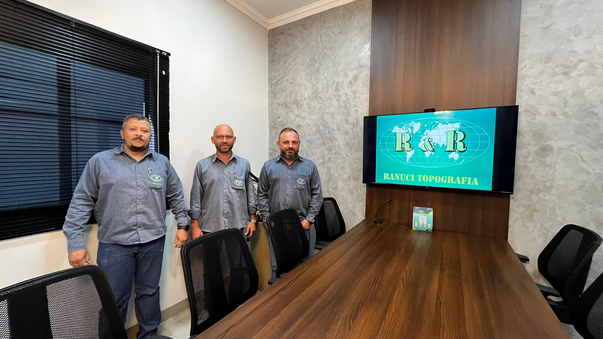

Atendendo com agilidade e qualidade, a mais de vinte anos buscamos constantemente desenvolver soluções inovadoras que otimizem e viabilizem os projetos de nossos clientes.
Solicite um orçamento no WhatsappNossa Equipe
A equipe da Ranuci Topografia é formada por profissionais altamente qualificados, com mais de 25 anos de experiência no mercado de agromensura e topografia. Com um compromisso sólido com a precisão e a inovação, nossa equipe utiliza tecnologia de ponta para garantir serviços eficientes e confiáveis. Atuamos em diversas áreas, como georreferenciamento, levantamentos topográficos e Cadastro Ambiental Rural (CAR), sempre focados na excelência e na satisfação de nossos clientes. Nossa tradição e expertise fazem da Ranuci Topografia uma referência no setor, oferecendo soluções personalizadas para cada necessidade.
Nossos Serviços
A Ranuci Topografia é especializada em topografia, cartografia, geodesia, consultoria, georreferenciamento, meio ambiente, car (cadastro ambiental rural), sare (sistema informatizado de acompanhamento a restauração ecológica), acompanhamento técnicos, laudos, vistorias, aerolevantamento, calculos de volumes, cortes, aterros, demarcações, curvas de niveis, projetos de regularização fundiaria, retificações, desmembramentos, rurais e urbanos.
Solicitar um orçamentoGeorreferenciamento
Serviços de georreferenciamento para imóveis rurais e regularização fundiária urbana e rural (Reurb), com suporte em trâmites cartorários e órgãos competentes.

Meio Ambiente - CAR
O Cadastro Ambiental Rural (CAR) é essencial para a regularização do seu imóvel rural. Nossa empresa cuida de todo o processo para você, garantindo conformidade ambiental e segurança jurídica.
Ortofoto
A ortofoto é uma imagem aérea corrigida geometricamente, essencial para mapeamento preciso. Oferecemos serviços de geração de ortofotos de alta qualidade para planejamento rural e ambiental.
Fale Conosco
Tire suas duvidas conosco
Fale Conosco
Tire suas duvidas conosco


@ranucitopografia